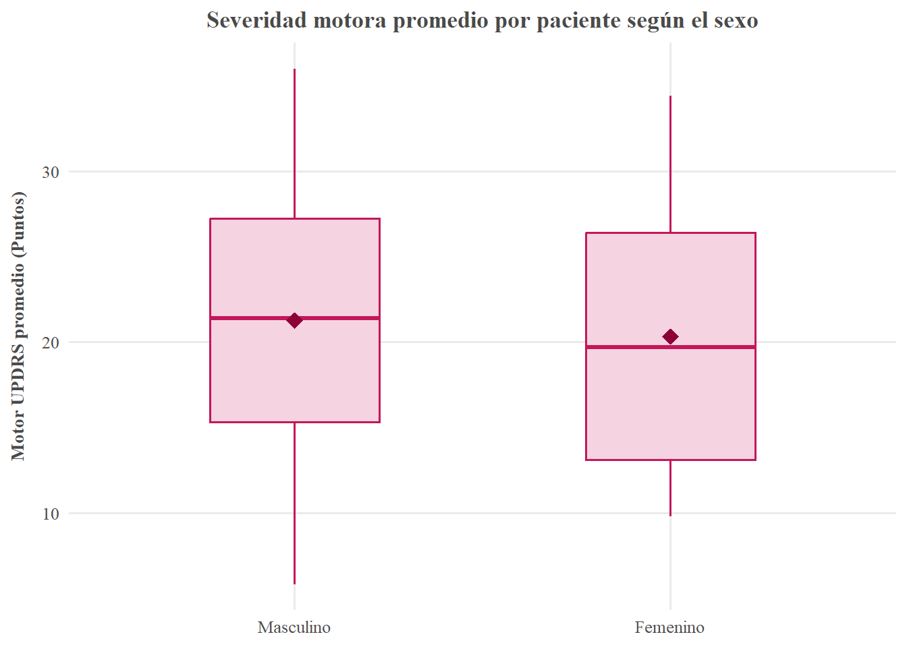
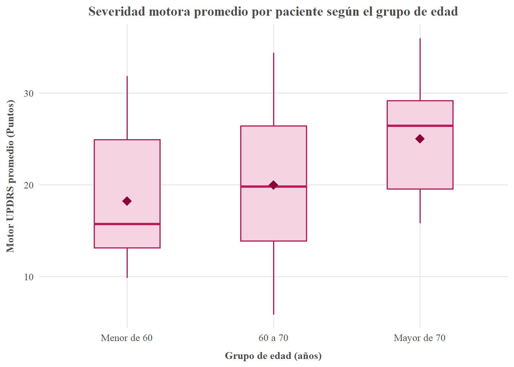
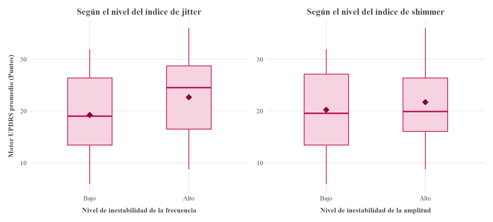
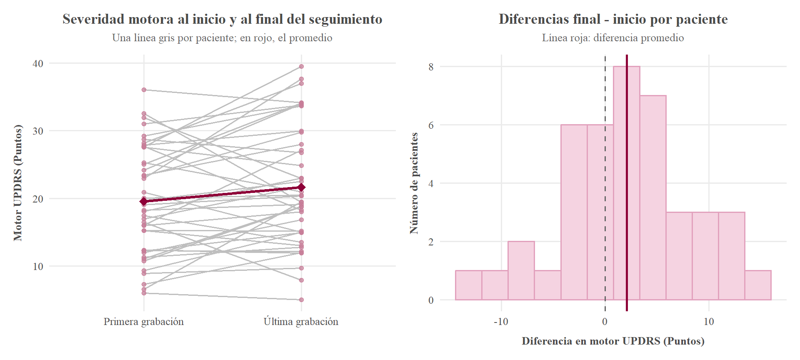
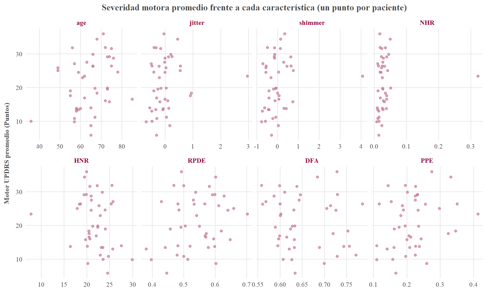
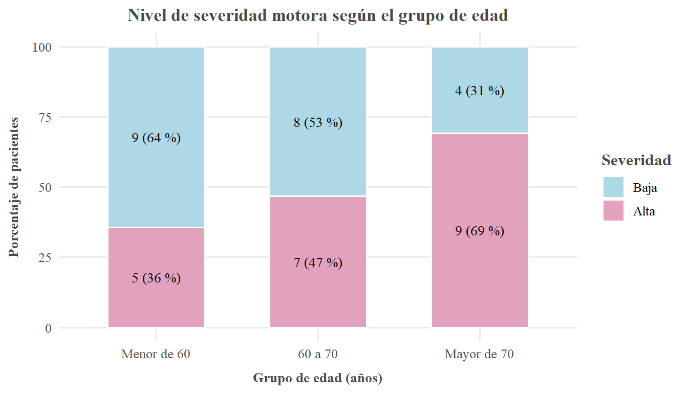

Capítulo 2 Estadística inferencial
Este capítulo cubre los objetivos específicos 5, 6 y 7: revisamos los supuestos de normalidad y homocedasticidad, contrastamos si la severidad motora cambia según el sexo, la edad, la inestabilidad vocal y el momento del seguimiento, probamos la correlación de cada característica con la severidad y la asociación entre el nivel de severidad y las variables categóricas, y medimos el tamaño de cada efecto. En todas las pruebas usamos \(\alpha = 0.05\).
2.1 Unidad de análisis: tabla por paciente
Las pruebas de hipótesis suponen observaciones independientes, y los 5.863 registros no lo son: vienen de 42 pacientes con entre 101 y 168 grabaciones cada uno, que comparten edad y sexo y cuyas puntuaciones motor_UPDRS están interpoladas entre visitas, así que casi no varían dentro de una misma persona. Tratarlos como independientes inflaría el tamaño de muestra y daría p-valores engañosamente pequeños (pseudorreplicación).
Por eso armamos una tabla con un registro por paciente: la severidad motora es el promedio de todas sus grabaciones, y de ahí salen las variables de agrupación: sexo, grupo de edad (menor de 60, 60 a 70 y mayor de 70 años) y nivel de inestabilidad vocal, alto o bajo según el promedio de cada índice quede en la mitad superior o en la mitad inferior de los pacientes. Para comparar el inicio y el final del seguimiento guardamos la primera y la última grabación de cada paciente.
pacientes <- data %>%
arrange(subject., test_time) %>%
group_by(subject., sex, age) %>%
summarise(
n_registros = n(),
motor = mean(motor_UPDRS),
motor_inicio = first(motor_UPDRS),
motor_final = last(motor_UPDRS),
dias_seguimiento = last(test_time) - first(test_time),
jitter = mean(indice_jitter),
shimmer = mean(indice_shimmer),
.groups = "drop"
) %>%
mutate(
grupo_edad = cut(age,
breaks = c(0, 59, 70, Inf),
labels = c("Menor de 60", "60 a 70", "Mayor de 70")),
nivel_jitter = factor(if_else(jitter > median(jitter), "Alto", "Bajo"),
levels = c("Bajo", "Alto")),
nivel_shimmer = factor(if_else(shimmer > median(shimmer), "Alto", "Bajo"),
levels = c("Bajo", "Alto"))
)
head(pacientes) %>%
mutate(across(where(is.numeric), ~ round(.x, 2))) %>%
tabla("Primeras filas de la tabla por paciente.",
ancha = TRUE)| subject. | sex | age | n_registros | motor | motor_inicio | motor_final | dias_seguimiento | jitter | shimmer | grupo_edad | nivel_jitter | nivel_shimmer |
|---|---|---|---|---|---|---|---|---|---|---|---|---|
| 1 | Masculino | 72 | 149 | 31.90 | 28.20 | 36.98 | 169.02 | -0.40 | -0.49 | Mayor de 70 | Bajo | Bajo |
| 2 | Masculino | 58 | 145 | 13.81 | 11.08 | 18.82 | 174.93 | 0.13 | 0.30 | Menor de 60 | Alto | Alto |
| 3 | Masculino | 57 | 144 | 27.12 | 23.44 | 28.01 | 160.98 | -0.50 | -0.70 | Menor de 60 | Bajo | Bajo |
| 4 | Masculino | 74 | 137 | 15.79 | 10.74 | 18.77 | 161.07 | -0.19 | 0.74 | Mayor de 70 | Bajo | Alto |
| 5 | Masculino | 75 | 156 | 31.63 | 31.00 | 33.76 | 161.03 | -0.17 | 0.13 | Mayor de 70 | Bajo | Alto |
| 6 | Masculino | 63 | 156 | 27.53 | 27.88 | 29.97 | 175.00 | -0.02 | 0.29 | 60 a 70 | Alto | Alto |
pacientes %>%
summarise(
n = n(),
media = mean(motor),
sd = sd(motor),
mediana = median(motor),
RIC = IQR(motor),
Q1 = quantile(motor, 0.25),
Q3 = quantile(motor, 0.75),
minimo = min(motor),
maximo = max(motor),
asimetria = skewness(motor),
curtosis = kurtosis(motor)
) %>%
mutate(across(where(is.numeric), ~ round(.x, 3))) %>%
tabla("Resumen de la severidad motora promedio por paciente.",
etiqueta = "inf-pacientes-motor", ancha = TRUE,
col.names = c("n", "Media", "Desviación estándar", "Mediana", "RIC", "Q1", "Q3",
"Mínimo", "Máximo", "Asimetría", "Curtosis"))| n | Media | Desviación estándar | Mediana | RIC | Q1 | Q3 | Mínimo | Máximo | Asimetría | Curtosis |
|---|---|---|---|---|---|---|---|---|---|---|
| 42 | 20.952 | 7.88 | 19.83 | 13.101 | 13.851 | 26.952 | 5.823 | 35.99 | 0.018 | 1.922 |
pacientes %>%
count(sex) %>%
tabla("Pacientes según el sexo.", etiqueta = "inf-pacientes-sexo",
col.names = c("Sexo", "Pacientes"))| Sexo | Pacientes |
|---|---|
| Masculino | 28 |
| Femenino | 14 |
pacientes %>%
count(grupo_edad) %>%
tabla("Pacientes según el grupo de edad.", etiqueta = "inf-pacientes-edad",
col.names = c("Grupo de edad", "Pacientes"))| Grupo de edad | Pacientes |
|---|---|
| Menor de 60 | 14 |
| 60 a 70 | 15 |
| Mayor de 70 | 13 |
table(pacientes$nivel_jitter, pacientes$nivel_shimmer) %>%
as.data.frame.matrix() %>%
tabla("Pacientes según el nivel de jitter (filas) y el nivel de shimmer (columnas).",
etiqueta = "inf-pacientes-niveles")| Bajo | Alto | |
|---|---|---|
| Bajo | 16 | 5 |
| Alto | 5 | 16 |
Quedan 42 pacientes: 28 hombres y 14 mujeres (Tabla 2.3); 14, 15 y 13 por grupo de edad (Tabla 2.4); y 21 con nivel alto y 21 con nivel bajo en cada índice (Tabla 2.5; las dos clasificaciones coinciden en 32 pacientes, reflejo de la correlación de 0.71 entre los índices). Según la Tabla 2.2, la severidad promedio por paciente tiene media de 20.95 puntos (desviación estándar de 7.88); el 50 % de los pacientes está por debajo de 19.83 puntos, la mitad central se ubica entre 13.85 y 26.95 (rango intercuartílico de 13.1), y los valores van de 5.82 a 35.99; es simétrica (asimetría 0.02) y algo plana (curtosis 1.92), sin las dos modas del nivel de registro, porque ahora cada paciente cuenta una sola vez.
Para ver el problema en concreto, comparamos motor_UPDRS por sexo en los dos niveles:
tibble(
nivel = c("Registro (n = 5863)", "Paciente (n = 42)"),
p_valor_t = c(t.test(motor_UPDRS ~ sex, data = data, var.equal = TRUE)$p.value,
t.test(motor ~ sex, data = pacientes, var.equal = TRUE)$p.value),
d_cohen = c(cohen.d(motor_UPDRS ~ sex, data = data)$estimate,
cohen.d(motor ~ sex, data = pacientes)$estimate)
) %>%
mutate(across(where(is.numeric), ~ round(.x, 3))) %>%
tabla("Prueba t por sexo a nivel de registro y a nivel de paciente.",
col.names = c("Nivel", "p-valor de la prueba t", "d de Cohen"))| Nivel | p-valor de la prueba t | d de Cohen |
|---|---|---|
| Registro (n = 5863) | 0.019 | 0.066 |
| Paciente (n = 42) | 0.721 | 0.118 |
En la Tabla 2.6 se ve que a nivel de registro sale p-valor = 0.019 con un efecto despreciable (d = 0.07): la “significancia” viene solo de contar a cada paciente unas 140 veces. Por paciente, con una diferencia parecida, p-valor = 0.72. Todo lo que sigue usa la tabla pacientes.
Para no repetir código, definimos dos funciones: el resumen descriptivo por grupo y las tres pruebas de normalidad (Shapiro-Wilk, Kolmogorov-Smirnov sobre datos estandarizados y Lilliefors). Además, para presentar los resultados de las pruebas como tablas en lugar de la salida de la consola, definimos tabla_pruebas, que resume cada prueba (estadístico, grados de libertad, p-valor, estimación e intervalo de confianza del 95 %), y tabla_cohen, que resume la d de Cohen con su intervalo y su magnitud.
resumen_grupo <- function(datos, grupo, variable = "motor") {
datos %>%
group_by(.data[[grupo]]) %>%
summarise(
n = n(),
promedio = mean(.data[[variable]]),
ds = sd(.data[[variable]]),
mediana = median(.data[[variable]]),
RIC = IQR(.data[[variable]]),
Q1 = quantile(.data[[variable]], 0.25),
Q3 = quantile(.data[[variable]], 0.75),
min = min(.data[[variable]]),
max = max(.data[[variable]])
) %>%
mutate(across(where(is.numeric), ~ round(.x, 3))) %>%
as.data.frame()
}
normalidad_grupo <- function(datos, grupo, variable = "motor") {
datos %>%
group_by(.data[[grupo]]) %>%
summarise(
n = n(),
est_w = shapiro.test(.data[[variable]])$statistic,
p_sw = shapiro.test(.data[[variable]])$p.value,
est_ks = ks.test(scale(.data[[variable]]), "pnorm")$statistic,
p_ks = ks.test(scale(.data[[variable]]), "pnorm")$p.value,
est_l = lillie.test(.data[[variable]])$statistic,
p_l = lillie.test(.data[[variable]])$p.value
) %>%
mutate(across(where(is.numeric), ~ round(.x, 3))) %>%
as.data.frame()
}
columnas_resumen <- c("Grupo", "n", "Media", "Desviación estándar", "Mediana", "RIC",
"Q1", "Q3", "Mínimo", "Máximo")
columnas_normalidad <- c("Grupo", "n", "W (Shapiro-Wilk)", "p Shapiro-Wilk",
"D (Kolmogorov-Smirnov)", "p Kolmogorov-Smirnov",
"D (Lilliefors)", "p Lilliefors")
intervalo <- function(inferior, superior, digitos = 3) {
paste0("[", round(inferior, digitos), ", ", round(superior, digitos), "]")
}
fila_prueba <- function(x, digitos = 3) {
# leveneTest devuelve una tabla de ANOVA en lugar de un objeto htest
if (inherits(x, "anova")) {
return(tibble(estadistico = paste0("F = ", round(x[["F value"]][1], digitos)),
gl = paste(x$Df, collapse = " y "),
p_valor = formato_p(x[["Pr(>F)"]][1], digitos),
estimacion = "", ic_95 = ""))
}
nombre <- dplyr::recode(names(x$statistic),
"Bartlett's K-squared" = "K²",
"Kruskal-Wallis chi-squared" = "χ²",
"X-squared" = "χ²")
estimacion <- x$estimate
# en la t de dos muestras se reporta la diferencia de medias
if (length(estimacion) == 2) estimacion <- estimacion[1] - estimacion[2]
tibble(
estadistico = paste0(nombre, " = ", round(x$statistic, digitos)),
gl = if (is.null(x$parameter)) "" else paste(round(x$parameter, 2), collapse = " y "),
p_valor = formato_p(x$p.value, digitos),
estimacion = if (is.null(estimacion)) "" else as.character(round(estimacion, digitos)),
ic_95 = if (is.null(x$conf.int)) "" else intervalo(x$conf.int[1], x$conf.int[2], digitos)
)
}
tabla_pruebas <- function(pruebas, titulo, etiqueta = NULL, digitos = 3) {
map_dfr(pruebas, fila_prueba, digitos = digitos, .id = "prueba") %>%
tabla(titulo, etiqueta = etiqueta,
col.names = c("Prueba", "Estadístico", "Grados de libertad", "p-valor",
"Estimación", "IC 95 %"))
}
tabla_cohen <- function(efectos, titulo, etiqueta = NULL) {
magnitudes <- c(negligible = "despreciable", small = "pequeño",
medium = "medio", large = "grande")
map_dfr(efectos, function(x) {
tibble(d = round(x$estimate, 3),
ic_95 = intervalo(x$conf.int[1], x$conf.int[2]),
magnitud = magnitudes[[as.character(x$magnitude)]])
}, .id = "comparacion") %>%
tabla(titulo, etiqueta = etiqueta,
col.names = c("Comparación", "d de Cohen", "IC 95 %", "Magnitud"))
}2.2 Severidad motora según el sexo
¿Difiere la severidad motora promedio entre hombres y mujeres?
\[H_0: \mu_{\text{Masculino}} = \mu_{\text{Femenino}} \qquad H_1: \mu_{\text{Masculino}} \neq \mu_{\text{Femenino}}\]
2.2.1 Análisis exploratorio
resumen_grupo(pacientes, "sex") %>%
tabla("Severidad motora promedio por paciente según el sexo.",
col.names = columnas_resumen)| Grupo | n | Media | Desviación estándar | Mediana | RIC | Q1 | Q3 | Mínimo | Máximo |
|---|---|---|---|---|---|---|---|---|---|
| Masculino | 28 | 21.265 | 7.745 | 21.373 | 11.892 | 15.334 | 27.227 | 5.823 | 35.990 |
| Femenino | 14 | 20.326 | 8.403 | 19.702 | 13.287 | 13.129 | 26.416 | 9.800 | 34.405 |
Para dibujar los diagramas de caja a nivel de paciente usamos una función que muestra la caja y el promedio de cada grupo (rombo):
caja_pacientes <- function(datos, grupo, titulo, eje_x = NULL, eje_y = "Motor UPDRS promedio (Puntos)") {
datos %>%
ggplot(aes(x = .data[[grupo]], y = motor)) +
geom_boxplot(fill = paleta[["rosa_claro"]], color = paleta[["fucsia"]], width = 0.45,
outlier.color = paleta[["vino"]]) +
stat_summary(fun = mean, geom = "point", shape = 18, size = 4, color = paleta[["vino"]]) +
labs(title = titulo, x = eje_x, y = eje_y)
}
Figura 2.1: Severidad motora promedio por paciente según el sexo. El rombo marca el promedio del grupo.
En la Tabla 2.7 se ve que los 28 hombres promedian 21.27 puntos (desviación estándar de 7.74) y las 14 mujeres 20.33 (desviación estándar de 8.4). El 50 % de los hombres supera los 21.37 puntos y su mitad central se ubica entre 15.33 y 27.23 (rango intercuartílico de 11.89); el 50 % de las mujeres supera los 19.7 puntos y su mitad central se ubica entre 13.13 y 26.42 (rango intercuartílico de 13.29). La diferencia no llega a un punto, y en la Figura 2.1 se observa que las cajas se solapan casi por completo y que no hay atípicos.
2.2.2 Supuesto de normalidad
normalidad_grupo(pacientes, "sex") %>%
tabla("Pruebas de normalidad de la severidad motora según el sexo.",
col.names = columnas_normalidad)| Grupo | n | W (Shapiro-Wilk) | p Shapiro-Wilk | D (Kolmogorov-Smirnov) | p Kolmogorov-Smirnov | D (Lilliefors) | p Lilliefors |
|---|---|---|---|---|---|---|---|
| Masculino | 28 | 0.973 | 0.663 | 0.126 | 0.716 | 0.126 | 0.302 |
| Femenino | 14 | 0.931 | 0.318 | 0.150 | 0.868 | 0.150 | 0.537 |
Ninguna prueba rechaza la normalidad (Tabla 2.8): Shapiro-Wilk da p-valor = 0.663 en hombres y p-valor = 0.318 en mujeres, y Kolmogorov-Smirnov y Lilliefors coinciden (p-valores entre 0.3 y 0.87). Asumimos normalidad en ambos grupos.
2.2.3 Supuesto de homocedasticidad
motor_hombres <- pacientes %>%
filter(sex == "Masculino") %>%
pull(motor)
motor_mujeres <- pacientes %>%
filter(sex == "Femenino") %>%
pull(motor)
prueba_f_sexo <- var.test(motor_hombres, motor_mujeres)
list("F de razón de varianzas" = prueba_f_sexo,
"Levene" = leveneTest(motor ~ sex, data = pacientes, center = median),
"Bartlett" = bartlett.test(motor ~ sex, data = pacientes)) %>%
tabla_pruebas("Pruebas de igualdad de varianzas de la severidad motora según el sexo. En la prueba F, la estimación es la razón de varianzas (hombres / mujeres).")| Prueba | Estadístico | Grados de libertad | p-valor | Estimación | IC 95 % |
|---|---|---|---|---|---|
| F de razón de varianzas | F = 0.849 | 27 y 13 | 0.692 | 0.849 | [0.297, 2.064] |
| Levene | F = 0.074 | 1 y 40 | 0.786 | ||
| Bartlett | K² = 0.116 | 1 | 0.734 |
La prueba F da F(27, 13) = 0.849, p-valor = 0.692, y el intervalo para la razón de varianzas, IC 95 % [0.3, 2.06], contiene al 1 (Tabla 2.9). Levene (p-valor = 0.786) y Bartlett (p-valor = 0.734) dicen lo mismo. No se rechaza la igualdad de varianzas, así que usamos la t de Student con varianzas iguales.
2.2.4 Prueba de hipótesis: t de Student
Como el grupo de mujeres es pequeño (n = 14), añadimos Mann-Whitney como análisis de sensibilidad:
prueba_t_sexo <- t.test(x = motor_hombres, y = motor_mujeres,
var.equal = TRUE, paired = FALSE)
list("t de Student" = prueba_t_sexo,
"Mann-Whitney" = wilcox.test(x = motor_hombres, y = motor_mujeres, paired = FALSE)) %>%
tabla_pruebas("Prueba t de Student y prueba de Mann-Whitney de la severidad motora según el sexo. En la t, la estimación es la diferencia de medias (hombres - mujeres).")| Prueba | Estadístico | Grados de libertad | p-valor | Estimación | IC 95 % |
|---|---|---|---|---|---|
| t de Student | t = 0.36 | 40 | 0.721 | 0.939 | [-4.33, 6.208] |
| Mann-Whitney | W = 212 | 0.683 |
La prueba t da t(40) = 0.36, p-valor = 0.721 (Tabla 2.10); la diferencia estimada es de 0.94 puntos, IC 95 % [-4.33, 6.21], un intervalo que incluye al 0. Mann-Whitney (W = 212, p-valor = 0.683) lleva a la misma decisión.
2.2.5 Tamaño del efecto
Para interpretar la d de Cohen usamos la escala de referencia: un valor absoluto menor de 0.2 es un efecto despreciable (trivial), de 0.2 a 0.5 pequeño, de 0.5 a 0.8 medio y de 0.8 o más grande. Es la misma escala que usamos en el resto del capítulo.
d_sexo <- cohen.d(motor_hombres, motor_mujeres, paired = FALSE)
tabla_cohen(list("Hombres vs. mujeres" = d_sexo),
"Tamaño del efecto de la diferencia de severidad motora según el sexo.")| Comparación | d de Cohen | IC 95 % | Magnitud |
|---|---|---|---|
| Hombres vs. mujeres | 0.118 | [-0.544, 0.78] | despreciable |
La d de Cohen es d = 0.12, IC 95 % [-0.54, 0.78] (Tabla 2.11): un efecto despreciable, con un intervalo que incluye al 0.
2.3 Severidad motora según el grupo de edad
¿Difiere la severidad motora promedio entre los tres grupos de edad?
\[H_0: \mu_{<60} = \mu_{60-70} = \mu_{>70} \qquad H_1: \text{al menos una media es diferente}\]
2.3.1 Análisis exploratorio
resumen_grupo(pacientes, "grupo_edad") %>%
tabla("Severidad motora promedio por paciente según el grupo de edad.",
col.names = columnas_resumen)| Grupo | n | Media | Desviación estándar | Mediana | RIC | Q1 | Q3 | Mínimo | Máximo |
|---|---|---|---|---|---|---|---|---|---|
| Menor de 60 | 14 | 18.236 | 7.328 | 15.712 | 11.789 | 13.117 | 24.906 | 9.800 | 31.861 |
| 60 a 70 | 15 | 19.960 | 8.273 | 19.773 | 12.538 | 13.862 | 26.400 | 5.823 | 34.405 |
| Mayor de 70 | 13 | 25.023 | 6.806 | 26.404 | 9.651 | 19.517 | 29.167 | 15.791 | 35.990 |
caja_pacientes(pacientes, "grupo_edad",
"Severidad motora promedio por paciente según el grupo de edad",
eje_x = "Grupo de edad (años)")
Figura 2.2: Severidad motora promedio por paciente según el grupo de edad. El rombo marca el promedio del grupo.
En la Tabla 2.12 y la Figura 2.2 se observa que la severidad sube con la edad: 18.24 puntos en los menores de 60 (desviación estándar de 7.33), 19.96 entre 60 y 70 (desviación estándar de 8.27) y 25.02 en los mayores de 70 (desviación estándar de 6.81), casi 7 puntos entre los extremos. Lo mismo se ve en los valores que parten cada grupo por la mitad: el 50 % de los menores de 60 está por debajo de 15.71 puntos, con su mitad central entre 13.12 y 24.91 (rango intercuartílico de 11.79); el 50 % del grupo intermedio está por debajo de 19.77, con su mitad central entre 13.86 y 26.4 (rango intercuartílico de 12.54), y el 50 % de los mayores de 70 está por debajo de 26.4, con su mitad central entre 19.52 y 29.17 (rango intercuartílico de 9.65). Las desviaciones estándar son parecidas, el grupo mayor es el más homogéneo y no hay atípicos.
2.3.2 Supuesto de normalidad
normalidad_grupo(pacientes, "grupo_edad") %>%
tabla("Pruebas de normalidad de la severidad motora según el grupo de edad.",
col.names = columnas_normalidad)| Grupo | n | W (Shapiro-Wilk) | p Shapiro-Wilk | D (Kolmogorov-Smirnov) | p Kolmogorov-Smirnov | D (Lilliefors) | p Lilliefors |
|---|---|---|---|---|---|---|---|
| Menor de 60 | 14 | 0.898 | 0.105 | 0.227 | 0.406 | 0.227 | 0.049 |
| 60 a 70 | 15 | 0.979 | 0.964 | 0.114 | 0.977 | 0.114 | 0.864 |
| Mayor de 70 | 13 | 0.921 | 0.257 | 0.169 | 0.796 | 0.169 | 0.396 |
En la Tabla 2.13, Shapiro-Wilk no rechaza en ningún grupo (p-valores de 0.105, 0.964 y 0.257) y Kolmogorov-Smirnov tampoco. Solo Lilliefors queda al límite en los menores de 60 (p-valor = 0.049). Como Shapiro-Wilk, la prueba más potente en muestras pequeñas, no rechaza, y el ANOVA es robusto a desvíos moderados con grupos de tamaño parecido, asumimos normalidad.
2.3.3 Supuesto de homocedasticidad
list("Levene" = leveneTest(motor ~ grupo_edad, data = pacientes, center = median),
"Bartlett" = bartlett.test(motor ~ grupo_edad, data = pacientes)) %>%
tabla_pruebas("Pruebas de igualdad de varianzas de la severidad motora según el grupo de edad.")| Prueba | Estadístico | Grados de libertad | p-valor | Estimación | IC 95 % |
|---|---|---|---|---|---|
| Levene | F = 0.258 | 2 y 39 | 0.774 | ||
| Bartlett | K² = 0.496 | 2 | 0.78 |
Levene (p-valor = 0.774) y Bartlett (p-valor = 0.78) no rechazan la igualdad de varianzas (Tabla 2.14).
2.3.4 Prueba de hipótesis: ANOVA de un factor
modelo_anova <- aov(motor ~ grupo_edad, data = pacientes)
summary(modelo_anova)[[1]] %>%
as.data.frame() %>%
rownames_to_column("fuente") %>%
mutate(fuente = c("Entre grupos (grupo de edad)", "Dentro de los grupos (residual)"),
across(where(is.numeric), ~ round(.x, 3)),
`Pr(>F)` = if_else(is.na(`Pr(>F)`), "", formato_p(`Pr(>F)`)),
`F value` = if_else(is.na(`F value`), "", as.character(`F value`))) %>%
tabla("Tabla del ANOVA de un factor de la severidad motora según el grupo de edad.",
col.names = c("Fuente de variación", "gl", "Suma de cuadrados", "Cuadrado medio",
"F", "p-valor"))| Fuente de variación | gl | Suma de cuadrados | Cuadrado medio | F | p-valor |
|---|---|---|---|---|---|
| Entre grupos (grupo de edad) | 2 | 333.493 | 166.746 | 2.94 | 0.065 |
| Dentro de los grupos (residual) | 39 | 2212.214 | 56.723 |
La suma de cuadrados se reparte en 333.5 entre grupos y 2212.2 dentro de ellos (Tabla 2.15), lo que da F(2, 39) = 2.94, p-valor = 0.065. Con \(\alpha = 0.05\) no se rechaza \(H_0\), aunque por poco.
Como el ANOVA no rechaza, la prueba de Tukey se muestra solo con fines exploratorios, para ver dónde está la diferencia:
TukeyHSD(modelo_anova)$grupo_edad %>%
as.data.frame() %>%
rownames_to_column("comparacion") %>%
transmute(comparacion, diferencia = round(diff, 3), ic_95 = intervalo(lwr, upr),
p_ajustado = formato_p(`p adj`)) %>%
tabla("Comparaciones de Tukey entre los grupos de edad.",
col.names = c("Comparación", "Diferencia de medias", "IC 95 %", "p-valor ajustado"))| Comparación | Diferencia de medias | IC 95 % | p-valor ajustado |
|---|---|---|---|
| 60 a 70-Menor de 60 | 1.724 | [-5.095, 8.542] | 0.812 |
| Mayor de 70-Menor de 60 | 6.787 | [-0.28, 13.854] | 0.062 |
| Mayor de 70-60 a 70 | 5.063 | [-1.89, 12.016] | 0.192 |
La única comparación que se acerca es mayores de 70 frente a menores de 60 (Tabla 2.16): 6.79 puntos de diferencia, IC 95 % [-0.28, 13.85], p-valor ajustado = 0.062. Las que involucran al grupo intermedio quedan lejos (p-valores ajustados de 0.81 y 0.19).
2.3.5 Análisis de sensibilidad: Kruskal-Wallis y comparaciones post hoc
Como el resultado quedó al límite y una prueba de normalidad también, repetimos el contraste con Kruskal-Wallis y, como post hoc, comparaciones por pares de Mann-Whitney con corrección de Holm.
list("Kruskal-Wallis" = kruskal.test(motor ~ grupo_edad, data = pacientes)) %>%
tabla_pruebas("Prueba de Kruskal-Wallis de la severidad motora según el grupo de edad.",
etiqueta = "inf-edad-kw")| Prueba | Estadístico | Grados de libertad | p-valor | Estimación | IC 95 % |
|---|---|---|---|---|---|
| Kruskal-Wallis | χ² = 6.019 | 2 | 0.049 |
pairwise.wilcox.test(pacientes$motor, pacientes$grupo_edad,
p.adjust.method = "holm", exact = FALSE)$p.value %>%
as.data.frame() %>%
rownames_to_column("grupo") %>%
mutate(across(where(is.numeric), ~ if_else(is.na(.x), "", formato_p(.x)))) %>%
tabla("p-valores ajustados por Holm de las comparaciones por pares de Mann-Whitney entre los grupos de edad.",
etiqueta = "inf-edad-pares", col.names = c("Grupo", "Menor de 60", "60 a 70"))| Grupo | Menor de 60 | 60 a 70 |
|---|---|---|
| 60 a 70 | 0.471 | |
| Mayor de 70 | 0.049 | 0.214 |
Kruskal-Wallis da \(\chi^2\)(2) = 6.02, p-valor = 0.049, justo por debajo de 0.05 (Tabla 2.17), y las comparaciones por pares señalan como única diferencia significativa la de mayores de 70 frente a menores de 60 (p-valor ajustado = 0.049, Tabla 2.18). Ambas aproximaciones coinciden en la dirección y en el par de grupos; discrepan en si se cruza o no el umbral del 5 %, señal de que con 42 pacientes estamos al límite de la potencia necesaria.
2.3.6 Tamaño del efecto
motor_menores_60 <- pacientes %>% filter(grupo_edad == "Menor de 60") %>% pull(motor)
motor_60_a_70 <- pacientes %>% filter(grupo_edad == "60 a 70") %>% pull(motor)
motor_mayores_70 <- pacientes %>% filter(grupo_edad == "Mayor de 70") %>% pull(motor)
d_edad <- cohen.d(motor_mayores_70, motor_menores_60, paired = FALSE)
list("Mayor de 70 vs. menor de 60" = d_edad,
"Mayor de 70 vs. 60 a 70" = cohen.d(motor_mayores_70, motor_60_a_70, paired = FALSE),
"60 a 70 vs. menor de 60" = cohen.d(motor_60_a_70, motor_menores_60, paired = FALSE)) %>%
tabla_cohen("Tamaño del efecto de la diferencia de severidad motora entre pares de grupos de edad.")| Comparación | d de Cohen | IC 95 % | Magnitud |
|---|---|---|---|
| Mayor de 70 vs. menor de 60 | 0.958 | [0.121, 1.796] | grande |
| Mayor de 70 vs. 60 a 70 | 0.664 | [-0.136, 1.463] | medio |
| 60 a 70 vs. menor de 60 | 0.220 | [-0.545, 0.985] | pequeño |
Medimos la magnitud con la d de Cohen entre pares de grupos (Tabla 2.19). Entre los mayores de 70 y los menores de 60, d = 0.96, IC 95 % [0.12, 1.8]: un efecto grande, con un intervalo que no incluye al 0. Entre los mayores de 70 y el grupo intermedio, d = 0.66, un efecto medio, y entre el grupo intermedio y los menores de 60, d = 0.22, un efecto pequeño. La diferencia se concentra en el grupo de mayor edad.
2.3.7 Conclusión
Con una confianza del 95 %, el ANOVA no permite afirmar que la severidad motora difiera entre grupos de edad (F(2, 39) = 2.94, p-valor = 0.065), aunque Kruskal-Wallis sí detecta una diferencia marginal (\(\chi^2\)(2) = 6.02, p-valor = 0.049) entre los mayores de 70 y los menores de 60. El tamaño del efecto entre los grupos extremos (d = 0.96, IC 95 % [0.12, 1.8], casi 7 puntos) indica que la diferencia es relevante en la práctica y que lo que falta es muestra, no relación: es coherente con la correlación positiva entre la edad y la severidad motora que ya aparecía en el exploratorio.
2.4 Severidad motora según el nivel de inestabilidad vocal
¿Tienen los pacientes con alta inestabilidad vocal una severidad motora distinta de los de baja inestabilidad? Lo contrastamos por separado para el índice de jitter (frecuencia) y el de shimmer (amplitud):
\[H_0: \mu_{\text{Alto}} = \mu_{\text{Bajo}} \qquad H_1: \mu_{\text{Alto}} \neq \mu_{\text{Bajo}}\]
2.4.1 Análisis exploratorio
resumen_grupo(pacientes, "nivel_jitter") %>%
tabla("Severidad motora promedio por paciente según el nivel del índice de jitter.",
etiqueta = "inf-voz-resumen-jitter", col.names = columnas_resumen)| Grupo | n | Media | Desviación estándar | Mediana | RIC | Q1 | Q3 | Mínimo | Máximo |
|---|---|---|---|---|---|---|---|---|---|
| Bajo | 21 | 19.244 | 7.935 | 18.988 | 12.944 | 13.424 | 26.368 | 5.823 | 31.899 |
| Alto | 21 | 22.661 | 7.628 | 24.502 | 12.225 | 16.507 | 28.733 | 8.706 | 35.990 |
resumen_grupo(pacientes, "nivel_shimmer") %>%
tabla("Severidad motora promedio por paciente según el nivel del índice de shimmer.",
etiqueta = "inf-voz-resumen-shimmer", col.names = columnas_resumen)| Grupo | n | Media | Desviación estándar | Mediana | RIC | Q1 | Q3 | Mínimo | Máximo |
|---|---|---|---|---|---|---|---|---|---|
| Bajo | 21 | 20.196 | 8.272 | 19.517 | 13.700 | 13.424 | 27.125 | 5.823 | 31.899 |
| Alto | 21 | 21.709 | 7.593 | 19.887 | 10.357 | 16.047 | 26.404 | 8.706 | 35.990 |
p_jitter <- caja_pacientes(pacientes, "nivel_jitter", "Según el nivel del índice de jitter",
eje_x = "Nivel de inestabilidad de la frecuencia")
p_shimmer <- caja_pacientes(pacientes, "nivel_shimmer", "Según el nivel del índice de shimmer",
eje_x = "Nivel de inestabilidad de la amplitud", eje_y = NULL)
p_jitter + p_shimmer
Figura 2.3: Severidad motora promedio por paciente según el nivel de los índices de jitter y shimmer. El rombo marca el promedio del grupo.
Según la Tabla 2.20, con jitter alto la severidad promedio es 22.66 (desviación estándar de 7.63) frente a 19.24 con jitter bajo (desviación estándar de 7.94), 3.4 puntos de diferencia con dispersiones casi iguales. La diferencia es mayor en el centro de cada grupo: el 50 % de los pacientes con jitter alto supera los 24.5 puntos, con su mitad central entre 16.51 y 28.73 (rango intercuartílico de 12.23), mientras que el 50 % de los de jitter bajo no llega a 18.99, con su mitad central entre 13.42 y 26.37 (rango intercuartílico de 12.94). Con el shimmer la brecha es menor (Tabla 2.21): 21.71 (desviación estándar de 7.59) frente a 20.2 (desviación estándar de 8.27). En la Figura 2.3 se observa que en los cuatro grupos el rango es amplio, no hay atípicos y las cajas se solapan bastante.
2.4.2 Supuesto de normalidad
normalidad_grupo(pacientes, "nivel_jitter") %>%
tabla("Pruebas de normalidad según el nivel del índice de jitter.",
etiqueta = "inf-voz-normalidad-jitter", col.names = columnas_normalidad)| Grupo | n | W (Shapiro-Wilk) | p Shapiro-Wilk | D (Kolmogorov-Smirnov) | p Kolmogorov-Smirnov | D (Lilliefors) | p Lilliefors |
|---|---|---|---|---|---|---|---|
| Bajo | 21 | 0.946 | 0.287 | 0.128 | 0.839 | 0.128 | 0.492 |
| Alto | 21 | 0.966 | 0.645 | 0.119 | 0.893 | 0.119 | 0.608 |
normalidad_grupo(pacientes, "nivel_shimmer") %>%
tabla("Pruebas de normalidad según el nivel del índice de shimmer.",
etiqueta = "inf-voz-normalidad-shimmer", col.names = columnas_normalidad)| Grupo | n | W (Shapiro-Wilk) | p Shapiro-Wilk | D (Kolmogorov-Smirnov) | p Kolmogorov-Smirnov | D (Lilliefors) | p Lilliefors |
|---|---|---|---|---|---|---|---|
| Bajo | 21 | 0.929 | 0.132 | 0.155 | 0.636 | 0.155 | 0.206 |
| Alto | 21 | 0.972 | 0.785 | 0.119 | 0.896 | 0.119 | 0.616 |
Nada rechaza la normalidad (Tablas 2.22 y 2.23): Shapiro-Wilk da p-valores de 0.287 y 0.645 para jitter bajo y alto, y de 0.132 y 0.785 para shimmer; las otras dos pruebas superan 0.2 en todos los casos.
2.4.3 Supuesto de homocedasticidad
motor_jitter_alto <- pacientes %>% filter(nivel_jitter == "Alto") %>% pull(motor)
motor_jitter_bajo <- pacientes %>% filter(nivel_jitter == "Bajo") %>% pull(motor)
motor_shimmer_alto <- pacientes %>% filter(nivel_shimmer == "Alto") %>% pull(motor)
motor_shimmer_bajo <- pacientes %>% filter(nivel_shimmer == "Bajo") %>% pull(motor)
list("Jitter: F de razón de varianzas" = var.test(motor_jitter_alto, motor_jitter_bajo),
"Jitter: Levene" = leveneTest(motor ~ nivel_jitter, data = pacientes, center = median),
"Shimmer: F de razón de varianzas" = var.test(motor_shimmer_alto, motor_shimmer_bajo),
"Shimmer: Levene" = leveneTest(motor ~ nivel_shimmer, data = pacientes, center = median)) %>%
tabla_pruebas("Pruebas de igualdad de varianzas de la severidad motora según el nivel de los índices de jitter y shimmer. En la prueba F, la estimación es la razón de varianzas (alto / bajo).")| Prueba | Estadístico | Grados de libertad | p-valor | Estimación | IC 95 % |
|---|---|---|---|---|---|
| Jitter: F de razón de varianzas | F = 0.924 | 20 y 20 | 0.862 | 0.924 | [0.375, 2.278] |
| Jitter: Levene | F = 0.053 | 1 y 40 | 0.819 | ||
| Shimmer: F de razón de varianzas | F = 0.843 | 20 y 20 | 0.706 | 0.843 | [0.342, 2.077] |
| Shimmer: Levene | F = 0.548 | 1 y 40 | 0.464 |
Para el jitter la razón de varianzas es 0.92 (F(20, 20) = 0.92, p-valor = 0.862; Levene, p-valor = 0.82) y para el shimmer 0.84 (F(20, 20) = 0.84, p-valor = 0.706; Levene, p-valor = 0.464), como se ve en la Tabla 2.24. En ambos casos se mantiene la homocedasticidad y usamos la t de Student con varianzas iguales.
2.4.4 Prueba de hipótesis: t de Student
Aplicamos t.test con varianzas iguales y, como análisis de sensibilidad, Mann-Whitney.
prueba_t_jitter <- t.test(x = motor_jitter_alto, y = motor_jitter_bajo,
var.equal = TRUE, paired = FALSE)
prueba_t_shimmer <- t.test(x = motor_shimmer_alto, y = motor_shimmer_bajo,
var.equal = TRUE, paired = FALSE)
list("Jitter: t de Student" = prueba_t_jitter,
"Jitter: Mann-Whitney" = wilcox.test(x = motor_jitter_alto, y = motor_jitter_bajo,
paired = FALSE),
"Shimmer: t de Student" = prueba_t_shimmer,
"Shimmer: Mann-Whitney" = wilcox.test(x = motor_shimmer_alto, y = motor_shimmer_bajo,
paired = FALSE)) %>%
tabla_pruebas("Pruebas t de Student y de Mann-Whitney de la severidad motora según el nivel de los índices de jitter y shimmer. En la t, la estimación es la diferencia de medias (alto - bajo).")| Prueba | Estadístico | Grados de libertad | p-valor | Estimación | IC 95 % |
|---|---|---|---|---|---|
| Jitter: t de Student | t = 1.423 | 40 | 0.163 | 3.417 | [-1.437, 8.272] |
| Jitter: Mann-Whitney | W = 276 | 0.168 | |||
| Shimmer: t de Student | t = 0.617 | 40 | 0.541 | 1.513 | [-3.44, 6.465] |
| Shimmer: Mann-Whitney | W = 243 | 0.584 |
Para el jitter, t(40) = 1.423, p-valor = 0.163 (Tabla 2.25): 3.42 puntos más en el grupo alto, IC 95 % [-1.44, 8.27], un intervalo que incluye al 0; Mann-Whitney coincide (W = 276, p-valor = 0.168). Para el shimmer, t(40) = 0.617, p-valor = 0.541, con 1.51 puntos de diferencia, IC 95 % [-3.44, 6.46]; Mann-Whitney da W = 243, p-valor = 0.584. No se rechaza \(H_0\) en ningún caso.
2.4.5 Tamaño del efecto
d_jitter <- cohen.d(motor_jitter_alto, motor_jitter_bajo, paired = FALSE)
d_shimmer <- cohen.d(motor_shimmer_alto, motor_shimmer_bajo, paired = FALSE)
list("Jitter alto vs. bajo" = d_jitter, "Shimmer alto vs. bajo" = d_shimmer) %>%
tabla_cohen("Tamaño del efecto de la diferencia de severidad motora según el nivel de los índices de jitter y shimmer.")| Comparación | d de Cohen | IC 95 % | Magnitud |
|---|---|---|---|
| Jitter alto vs. bajo | 0.439 | [-0.192, 1.07] | pequeño |
| Shimmer alto vs. bajo | 0.191 | [-0.435, 0.816] | despreciable |
Para el jitter, d = 0.44, IC 95 % [-0.19, 1.07], un efecto pequeño que roza el medio; para el shimmer, d = 0.19, IC 95 % [-0.43, 0.82], un efecto despreciable (Tabla 2.26). Ambos intervalos incluyen al 0.
2.4.6 Conclusión
Con una confianza del 95 %, no hay evidencia de que la severidad motora difiera entre pacientes con alta y baja inestabilidad vocal, ni en frecuencia (jitter: t(40) = 1.42, p-valor = 0.163) ni en amplitud (shimmer: t(40) = 0.62, p-valor = 0.541). Los tamaños del efecto sí los distinguen: el del shimmer es despreciable (d = 0.19), pero el del jitter (d = 0.44, 3.4 puntos más de severidad) no es trivial; con 21 pacientes por grupo no alcanza la significancia, pero va en la misma dirección que la asociación débil entre el jitter y la severidad motora que vimos en el exploratorio.
2.5 Evolución de la severidad motora durante el seguimiento
¿Cambia la severidad motora entre la primera y la última grabación de cada paciente? Las separan entre 153 y 204 días; en el 50 % de los pacientes, 170 días o más, y la mitad central de los pacientes se ubica entre 167.29 y 175.04 días (rango intercuartílico de 7.76 días), es decir, unos seis meses (Tabla 2.27). Como son dos medidas del mismo paciente, los datos son pareados y la hipótesis se plantea sobre la media de las diferencias:
\[H_0: \mu_{\text{final} - \text{inicio}} = 0 \qquad H_1: \mu_{\text{final} - \text{inicio}} \neq 0\]
pacientes %>%
summarise(
minimo = min(dias_seguimiento),
Q1 = quantile(dias_seguimiento, 0.25),
mediana = median(dias_seguimiento),
RIC = IQR(dias_seguimiento),
Q3 = quantile(dias_seguimiento, 0.75),
maximo = max(dias_seguimiento)
) %>%
mutate(across(everything(), ~ round(.x, 2))) %>%
tabla("Días entre la primera y la última grabación de cada paciente.",
col.names = c("Mínimo", "Q1", "Mediana", "RIC", "Q3", "Máximo"))| Mínimo | Q1 | Mediana | RIC | Q3 | Máximo |
|---|---|---|---|---|---|
| 153.01 | 167.29 | 170.19 | 7.76 | 175.04 | 203.99 |
2.5.1 Análisis exploratorio
pacientes <- pacientes %>%
mutate(diferencia = motor_final - motor_inicio)
pacientes %>%
summarise(
n = n(),
promedio_inicio = mean(motor_inicio),
promedio_final = mean(motor_final),
sd_inicio = sd(motor_inicio),
sd_final = sd(motor_final),
mediana_inicio = median(motor_inicio),
mediana_final = median(motor_final),
min_inicio = min(motor_inicio),
max_inicio = max(motor_inicio),
min_final = min(motor_final),
max_final = max(motor_final)
) %>%
mutate(across(everything(), ~ round(.x, 3))) %>%
pivot_longer(-n, names_to = c(".value", "momento"), names_pattern = "(.*)_(inicio|final)") %>%
mutate(momento = if_else(momento == "inicio", "Primera grabación", "Última grabación")) %>%
select(momento, n, everything()) %>%
tabla("Severidad motora en la primera y la última grabación de cada paciente.",
etiqueta = "inf-pareado-momentos",
col.names = c("Momento", "n", "Media", "Desviación estándar", "Mediana",
"Mínimo", "Máximo"))| Momento | n | Media | Desviación estándar | Mediana | Mínimo | Máximo |
|---|---|---|---|---|---|---|
| Primera grabación | 42 | 19.578 | 7.974 | 18.675 | 6.000 | 36.073 |
| Última grabación | 42 | 21.655 | 8.795 | 19.922 | 5.038 | 39.511 |
pacientes %>%
summarise(
n = n(),
promedio_diferencia = mean(diferencia),
sd_diferencia = sd(diferencia),
mediana_diferencia = median(diferencia),
RIC_diferencia = IQR(diferencia),
Q1_diferencia = quantile(diferencia, 0.25),
Q3_diferencia = quantile(diferencia, 0.75),
min_diferencia = min(diferencia),
max_diferencia = max(diferencia),
pacientes_que_aumentan = sum(diferencia > 0),
pacientes_que_disminuyen = sum(diferencia < 0)
) %>%
mutate(across(everything(), ~ round(.x, 3))) %>%
tabla("Diferencias final - inicio de la severidad motora por paciente.",
etiqueta = "inf-pareado-diferencias", ancha = TRUE,
col.names = c("n", "Media", "Desviación estándar", "Mediana", "RIC", "Q1", "Q3",
"Mínimo", "Máximo", "Pacientes que aumentan", "Pacientes que disminuyen"))| n | Media | Desviación estándar | Mediana | RIC | Q1 | Q3 | Mínimo | Máximo | Pacientes que aumentan | Pacientes que disminuyen |
|---|---|---|---|---|---|---|---|---|---|---|
| 42 | 2.076 | 6.232 | 2.049 | 7.162 | -1.673 | 5.489 | -13.118 | 14.702 | 27 | 15 |
p_trayectorias <- pacientes %>%
select(subject., motor_inicio, motor_final) %>%
pivot_longer(cols = c(motor_inicio, motor_final),
names_to = "momento", values_to = "motor") %>%
mutate(momento = factor(momento,
levels = c("motor_inicio", "motor_final"),
labels = c("Primera grabación", "Última grabación"))) %>%
ggplot(aes(x = momento, y = motor, group = subject.)) +
geom_line(color = "gray75") +
geom_point(color = paleta[["rosa_medio"]], alpha = 0.7) +
stat_summary(aes(group = 1), fun = mean, geom = "line",
color = paleta[["vino"]], linewidth = 1.2) +
stat_summary(aes(group = 1), fun = mean, geom = "point",
color = paleta[["vino"]], size = 3.5, shape = 18) +
labs(title = "Severidad motora al inicio y al final del seguimiento",
subtitle = "Una línea gris por paciente; en rojo, el promedio",
x = NULL,
y = "Motor UPDRS (Puntos)")
p_diferencias <- pacientes %>%
ggplot(aes(x = diferencia)) +
geom_histogram(bins = 12, fill = paleta[["rosa_claro"]], color = paleta[["rosa"]]) +
geom_vline(xintercept = 0, linetype = "dashed", color = "gray40") +
geom_vline(xintercept = mean(pacientes$diferencia), color = paleta[["vino"]], linewidth = 1) +
labs(title = "Diferencias final - inicio por paciente",
subtitle = "Línea roja: diferencia promedio",
x = "Diferencia en motor UPDRS (Puntos)",
y = "Número de pacientes")
p_trayectorias + p_diferencias
Figura 2.4: Severidad motora en la primera y la última grabación de cada paciente, y distribución de las diferencias.
Según las Tablas 2.28 y 2.29, la severidad promedio pasa de 19.58 puntos (desviación estándar de 7.97) en la primera grabación a 21.65 (desviación estándar de 8.8) en la última: un aumento medio de 2.08 puntos (desviación estándar de 6.23). En el 50 % de los pacientes el cambio supera los 2.05 puntos, y la mitad central de los cambios se ubica entre -1.67 y 5.49 puntos (rango intercuartílico de 7.16). No es parejo: 27 de los 42 pacientes (64 %) empeoran y 15 mejoran, con cambios individuales entre -13.12 y 14.7 puntos, como se observa en las trayectorias de la Figura 2.4.
2.5.2 Supuesto de normalidad de las diferencias
list("Shapiro-Wilk" = shapiro.test(pacientes$diferencia),
"Kolmogorov-Smirnov" = ks.test(scale(pacientes$diferencia), "pnorm"),
"Lilliefors" = lillie.test(pacientes$diferencia)) %>%
tabla_pruebas("Pruebas de normalidad de las diferencias final - inicio de la severidad motora.")| Prueba | Estadístico | Grados de libertad | p-valor | Estimación | IC 95 % |
|---|---|---|---|---|---|
| Shapiro-Wilk | W = 0.987 | 0.92 | |||
| Kolmogorov-Smirnov | D = 0.061 | 0.995 | |||
| Lilliefors | D = 0.061 | 0.958 |
Las diferencias se ajustan muy bien a la normal (Tabla 2.30): Shapiro-Wilk da W = 0.987, p-valor = 0.92; Kolmogorov-Smirnov, p-valor = 0.995, y Lilliefors, p-valor = 0.958. Se cumple el supuesto de la t pareada.
2.5.3 Prueba de hipótesis: t pareada
Como análisis de sensibilidad, añadimos la prueba de rangos con signo de Wilcoxon:
prueba_t_pareada <- t.test(x = pacientes$motor_final, y = pacientes$motor_inicio,
paired = TRUE)
list("t pareada" = prueba_t_pareada,
"Wilcoxon de rangos con signo" = wilcox.test(x = pacientes$motor_final,
y = pacientes$motor_inicio,
paired = TRUE)) %>%
tabla_pruebas("Prueba t pareada y prueba de Wilcoxon entre la última y la primera grabación. En la t, la estimación es la diferencia media (final - inicio).")| Prueba | Estadístico | Grados de libertad | p-valor | Estimación | IC 95 % |
|---|---|---|---|---|---|
| t pareada | t = 2.159 | 41 | 0.037 | 2.076 | [0.134, 4.018] |
| Wilcoxon de rangos con signo | V = 630 | 0.025 |
La t pareada da t(41) = 2.159, p-valor = 0.037 (Tabla 2.31); el aumento medio de 2.08 puntos tiene un IC 95 % [0.13, 4.02] que no incluye al 0. Wilcoxon confirma (V = 630, p-valor = 0.025).
2.5.4 Tamaño del efecto
d_pareado <- cohen.d(pacientes$motor_final, pacientes$motor_inicio, paired = TRUE)
tabla_cohen(list("Última vs. primera grabación" = d_pareado),
"Tamaño del efecto del cambio de severidad motora durante el seguimiento.")| Comparación | d de Cohen | IC 95 % | Magnitud |
|---|---|---|---|
| Última vs. primera grabación | 0.246 | [0.016, 0.476] | pequeño |
La d de Cohen pareada es d = 0.25, IC 95 % [0.02, 0.48] (Tabla 2.32): un efecto pequeño, pero esta vez el intervalo no incluye al 0.
2.5.5 Conclusión
Con una confianza del 95 %, la severidad motora aumenta de forma significativa entre la primera y la última grabación (t(41) = 2.16, p-valor = 0.037): en promedio, 2.08 puntos (desviación estándar de 6.23) en unos seis meses. El efecto es pequeño (d = 0.25, IC 95 % [0.02, 0.48]), lo que encaja con una progresión lenta en la etapa temprana de la enfermedad y con la heterogeneidad entre pacientes: cerca de un tercio mejora en ese periodo.
2.6 Correlación entre las características y la severidad motora
En el EDA vimos que, registro a registro, ninguna característica se correlaciona con fuerza con la puntuación motor UPDRS. Aquí contrastamos esas correlaciones formalmente y a nivel de paciente: para cada característica (edad, los dos índices de inestabilidad vocal y las cinco medidas acústicas restantes, todas promediadas por paciente) probamos si su correlación con la severidad motora es distinta de cero.
\[H_0: \rho = 0 \qquad H_1: \rho \neq 0\]
La prueba de Pearson supone que ambas variables son aproximadamente normales; cuando no se cumple, usamos la correlación de rangos de Spearman.
2.6.1 Análisis exploratorio
pacientes <- pacientes %>%
left_join(
data %>%
group_by(subject.) %>%
summarise(NHR = mean(NHR), HNR = mean(HNR), RPDE = mean(RPDE),
DFA = mean(DFA), PPE = mean(PPE), .groups = "drop"),
by = "subject."
)
variables_cor <- c("age", "jitter", "shimmer", "NHR", "HNR", "RPDE", "DFA", "PPE")pacientes %>%
select(motor, all_of(variables_cor)) %>%
pivot_longer(-motor, names_to = "variable", values_to = "valor") %>%
mutate(variable = factor(variable, levels = variables_cor)) %>%
ggplot(aes(x = valor, y = motor)) +
geom_point(color = paleta[["rosa_medio"]], alpha = 0.7) +
facet_wrap(~ variable, scales = "free_x", ncol = 4) +
labs(title = "Severidad motora promedio frente a cada característica (un punto por paciente)",
x = NULL,
y = "Motor UPDRS promedio (Puntos)")
Figura 2.5: Severidad motora promedio frente a cada característica, con un punto por paciente.
En la Figura 2.5, con un punto por paciente, se observan relaciones positivas débiles con la edad, PPE y RPDE (cuando aumentan, la severidad tiende a aumentar) y negativas débiles con HNR y DFA (cuando aumentan, la severidad tiende a disminuir). Con los índices de inestabilidad y NHR no se aprecia una relación clara.
2.6.2 Supuesto de normalidad
tibble(
variable = c("motor", variables_cor),
p_shapiro = sapply(c("motor", variables_cor),
function(v) shapiro.test(pacientes[[v]])$p.value),
asimetria = sapply(c("motor", variables_cor),
function(v) skewness(pacientes[[v]]))
) %>%
mutate(metodo = if_else(p_shapiro > 0.05, "Pearson", "Spearman"),
p_shapiro = formato_p(p_shapiro),
asimetria = round(asimetria, 3)) %>%
tabla("Normalidad de cada variable a nivel de paciente y método de correlación que corresponde.",
col.names = c("Variable", "p Shapiro-Wilk", "Asimetría", "Método"))| Variable | p Shapiro-Wilk | Asimetría | Método |
|---|---|---|---|
| motor | 0.255 | 0.018 | Pearson |
| age | 0.317 | -0.463 | Pearson |
| jitter | < 0.001 | 3.152 | Spearman |
| shimmer | < 0.001 | 3.716 | Spearman |
| NHR | < 0.001 | 5.714 | Spearman |
| HNR | 0.001 | -1.169 | Spearman |
| RPDE | 0.946 | -0.084 | Pearson |
| DFA | 0.005 | 0.521 | Spearman |
| PPE | 0.039 | 0.815 | Spearman |
En la Tabla 2.33 se ve que la severidad motora, la edad y RPDE pasan Shapiro-Wilk (p-valores de 0.255, 0.317 y 0.946), así que con ellas la correlación de Pearson es válida. El resto no: los índices de jitter y shimmer, NHR, HNR, DFA y PPE conservan la asimetría fuerte que ya tenían a nivel de registro, y para ellas la referencia es Spearman. En la Tabla 2.34 mostramos las dos, de modo que se vea cuánto cambia el resultado con el método.
2.6.3 Prueba de hipótesis: correlación de Pearson y de Spearman
resultados_cor <- map_dfr(variables_cor, function(v) {
pearson <- cor.test(pacientes[[v]], pacientes$motor, method = "pearson")
spearman <- cor.test(pacientes[[v]], pacientes$motor, method = "spearman", exact = FALSE)
tibble(
variable = v,
r_pearson = pearson$estimate,
IC_inf = pearson$conf.int[1],
IC_sup = pearson$conf.int[2],
p_pearson = pearson$p.value,
rho_spearman = spearman$estimate,
p_spearman = spearman$p.value
)
}) %>%
mutate(p_pearson_holm = p.adjust(p_pearson, method = "holm")) %>%
arrange(desc(abs(r_pearson))) %>%
mutate(across(where(is.numeric), ~ round(.x, 3))) %>%
as.data.frame()
resultados_cor %>%
mutate(across(starts_with("p_"), formato_p)) %>%
tabla("Correlaciones de Pearson y de Spearman de cada característica con la severidad motora.",
col.names = c("Variable", "r de Pearson", "IC inferior", "IC superior", "p Pearson",
"rho de Spearman", "p Spearman", "p Pearson (Holm)"))| Variable | r de Pearson | IC inferior | IC superior | p Pearson | rho de Spearman | p Spearman | p Pearson (Holm) |
|---|---|---|---|---|---|---|---|
| age | 0.299 | -0.005 | 0.553 | 0.054 | 0.343 | 0.026 | 0.434 |
| PPE | 0.261 | -0.047 | 0.523 | 0.095 | 0.239 | 0.127 | 0.668 |
| HNR | -0.251 | -0.515 | 0.057 | 0.109 | -0.273 | 0.08 | 0.668 |
| RPDE | 0.238 | -0.071 | 0.505 | 0.129 | 0.198 | 0.209 | 0.668 |
| shimmer | 0.179 | -0.132 | 0.458 | 0.256 | 0.263 | 0.092 | 1 |
| jitter | 0.158 | -0.154 | 0.441 | 0.318 | 0.217 | 0.168 | 1 |
| NHR | 0.126 | -0.185 | 0.414 | 0.425 | 0.322 | 0.038 | 1 |
| DFA | -0.123 | -0.412 | 0.188 | 0.438 | -0.149 | 0.345 | 1 |
Como la edad es la que más se acerca a la significancia, mostramos su cor.test completo:
list("Pearson: edad y severidad motora" = cor.test(pacientes$age, pacientes$motor,
method = "pearson")) %>%
tabla_pruebas("Prueba de correlación de Pearson entre la edad y la severidad motora. La estimación es el coeficiente r.")| Prueba | Estadístico | Grados de libertad | p-valor | Estimación | IC 95 % |
|---|---|---|---|---|---|
| Pearson: edad y severidad motora | t = 1.983 | 40 | 0.054 | 0.299 | [-0.005, 0.553] |
La edad es la única característica que se acerca al umbral (Tabla 2.35): r = 0.299, IC 95 % [-0.005, 0.553], t(40) = 1.98, p-valor = 0.054; con Spearman, que no depende de la normalidad ni de los valores extremos, la asociación sí resulta significativa (ρ = 0.343, p-valor = 0.026). Entre las demás, ninguna alcanza la significancia con Pearson: PPE (r = 0.26, p-valor = 0.095), HNR (r = -0.25, p-valor = 0.109) y RPDE (r = 0.24, p-valor = 0.129) quedan cerca, mientras que los índices de jitter y shimmer, NHR y DFA tienen correlaciones de Pearson entre 0.12 y 0.18 en valor absoluto. NHR es un caso aparte: su Pearson es 0.13 pero su Spearman 0.32 (p-valor = 0.038), porque los pocos pacientes con ruido muy alto distorsionan la correlación lineal. Como NHR no es normal, Spearman es el método de referencia para ella, así que es la otra característica con una correlación significativa, débil según la escala de referencia. Como son ocho pruebas sobre la misma respuesta, la última columna ajusta los p-valores de Pearson por el método de Holm: ninguno se mantiene por debajo de 0.05.
2.6.4 Tamaño del efecto
En una correlación el tamaño del efecto es el propio coeficiente. Según la escala de referencia, |r| menor de 0.25 se interpreta como sin correlación o muy débil, entre 0.25 y 0.5 débil, entre 0.5 y 0.75 moderada y por encima de 0.75 muy fuerte; r² indica qué proporción de la variabilidad comparten las dos variables.
resultados_cor %>%
transmute(
variable,
r_pearson,
r_cuadrado = round(r_pearson^2, 3),
magnitud = case_when(abs(r_pearson) < 0.25 ~ "sin correlación o muy débil",
abs(r_pearson) < 0.5 ~ "débil",
abs(r_pearson) < 0.75 ~ "moderada",
TRUE ~ "muy fuerte")
) %>%
tabla("Magnitud de cada correlación de Pearson con la severidad motora.",
col.names = c("Variable", "r de Pearson", "r²", "Magnitud"))| Variable | r de Pearson | r² | Magnitud |
|---|---|---|---|
| age | 0.299 | 0.089 | débil |
| PPE | 0.261 | 0.068 | débil |
| HNR | -0.251 | 0.063 | débil |
| RPDE | 0.238 | 0.057 | sin correlación o muy débil |
| shimmer | 0.179 | 0.032 | sin correlación o muy débil |
| jitter | 0.158 | 0.025 | sin correlación o muy débil |
| NHR | 0.126 | 0.016 | sin correlación o muy débil |
| DFA | -0.123 | 0.015 | sin correlación o muy débil |
Según la Tabla 2.36, la edad (r = 0.3), PPE (0.26) y HNR (-0.25) son correlaciones débiles: comparten con la severidad motora entre el 6 % y el 9 % de su variabilidad. RPDE (0.24), los índices de jitter y shimmer, NHR y DFA quedan por debajo de 0.25, sin correlación o muy débil, y explican menos del 6 % de la variabilidad.
2.6.5 Conclusión
Con una confianza del 95 %, solo la edad y NHR muestran una correlación significativa con la severidad motora, y en ambos casos es débil y poco firme: en la edad Pearson queda justo por encima del umbral (p-valor = 0.054) y Spearman por debajo (p-valor = 0.026), y en NHR la asociación solo aparece con Spearman (ρ = 0.32, p-valor = 0.038), mientras que su Pearson es casi nulo (0.13). Las demás características acústicas tienen correlaciones débiles o muy débiles, entre 0.12 y 0.26 en valor absoluto, que con 42 pacientes no alcanzan la significancia, y ninguna correlación de Pearson se mantiene significativa al corregir por comparaciones múltiples. Es el mismo mensaje que dejaron el EDA y las comparaciones entre grupos: la edad pesa más que la voz, y para detectar los efectos pequeños de la voz haría falta una muestra mayor de pacientes. Además, la existencia de una correlación no implica causalidad: que la severidad tienda a ser mayor en los pacientes de más edad o con más ruido en la voz no significa que la edad o el ruido la provoquen, sino solo que ambas cosas tienden a presentarse juntas.
2.7 Asociación entre el nivel de severidad motora y las características categóricas
Las pruebas anteriores comparan promedios o miden correlaciones. La prueba chi-cuadrado de independencia responde otra pregunta: si dos variables categóricas están asociadas. Como sex es la única categórica del conjunto de datos, construimos las demás categorizando variables numéricas: el grupo de edad ya está definido, y la severidad motora se clasifica en alta o baja según el promedio de motor_UPDRS de cada paciente quede en la mitad superior o en la mitad inferior de los 42 pacientes. La pregunta principal es si el nivel de severidad está asociado con el grupo de edad; como segunda tabla, se cruza con el sexo.
\[H_0: \text{el nivel de severidad es independiente del grupo de edad} \qquad H_1: \text{están asociados}\]
2.7.1 Tabla de contingencia
pacientes <- pacientes %>%
mutate(severidad = factor(if_else(motor > median(motor), "Alta", "Baja"),
levels = c("Baja", "Alta")))
tabla_edad_severidad <- table(pacientes$grupo_edad, pacientes$severidad)
tabla_edad_severidad %>%
as.data.frame.matrix() %>%
tabla("Pacientes según el grupo de edad (filas) y el nivel de severidad (columnas).",
etiqueta = "inf-chi-frecuencias")| Baja | Alta | |
|---|---|---|
| Menor de 60 | 9 | 5 |
| 60 a 70 | 8 | 7 |
| Mayor de 70 | 4 | 9 |
round(prop.table(tabla_edad_severidad, margin = 1) * 100, 1) %>%
as.data.frame.matrix() %>%
tabla("Porcentaje de pacientes con severidad baja y alta dentro de cada grupo de edad.",
etiqueta = "inf-chi-porcentajes")| Baja | Alta | |
|---|---|---|
| Menor de 60 | 64.3 | 35.7 |
| 60 a 70 | 53.3 | 46.7 |
| Mayor de 70 | 30.8 | 69.2 |
pacientes %>%
count(grupo_edad, severidad) %>%
group_by(grupo_edad) %>%
mutate(porcentaje = n / sum(n) * 100) %>%
ggplot(aes(x = grupo_edad, y = porcentaje, fill = severidad)) +
geom_col(width = 0.6, color = "white") +
geom_text(aes(label = paste0(n, " (", round(porcentaje), " %)")),
position = position_stack(vjust = 0.5), size = 3.5) +
scale_fill_manual(values = c(Baja = paleta[["azul_claro"]], Alta = paleta[["rosa"]]),
name = "Severidad") +
labs(title = "Nivel de severidad motora según el grupo de edad",
x = "Grupo de edad (años)",
y = "Porcentaje de pacientes")
Figura 2.6: Nivel de severidad motora según el grupo de edad.
En la Tabla 2.37 y la Figura 2.6 se observa que la proporción de pacientes con severidad alta sube con la edad: 5 de 14 (36 %) en los menores de 60, 7 de 15 (47 %) entre 60 y 70 y 9 de 13 (69 %) en los mayores de 70. La tabla apunta en la misma dirección que el ANOVA por grupo de edad; falta ver si la diferencia es mayor de lo que produciría el azar.
2.7.2 Supuesto: frecuencias esperadas
Bajo \(H_0\), la frecuencia esperada de cada celda es (total de la fila × total de la columna) / N. La prueba requiere que todas sean al menos 5.
prueba_chi_edad <- chisq.test(tabla_edad_severidad, correct = FALSE)
round(prueba_chi_edad$expected, 2) %>%
as.data.frame() %>%
tabla("Frecuencias esperadas bajo independencia entre el grupo de edad y el nivel de severidad.")| Baja | Alta | |
|---|---|---|
| Menor de 60 | 7.0 | 7.0 |
| 60 a 70 | 7.5 | 7.5 |
| Mayor de 70 | 6.5 | 6.5 |
La menor frecuencia esperada es 6.5 (Tabla 2.39), así que el supuesto se cumple y la prueba es válida.
2.7.3 Prueba de hipótesis: chi-cuadrado de independencia
list("Chi-cuadrado de independencia" = prueba_chi_edad) %>%
tabla_pruebas("Prueba chi-cuadrado de independencia entre el grupo de edad y el nivel de severidad.")| Prueba | Estadístico | Grados de libertad | p-valor | Estimación | IC 95 % |
|---|---|---|---|---|---|
| Chi-cuadrado de independencia | χ² = 3.133 | 2 | 0.209 |
El estadístico es χ²(2) = 3.13, p-valor = 0.209 (Tabla 2.40). No se rechaza \(H_0\): con 42 pacientes, la distribución de severidad alta y baja no difiere significativamente entre grupos de edad.
2.7.4 Tamaño del efecto: V de Cramer
La V de Cramer corrige el chi-cuadrado por el tamaño de muestra, \(V = \sqrt{\chi^2 / (N \cdot \min(r - 1, c - 1))}\), y va de 0 (independencia) a 1 (asociación perfecta); las referencias habituales son 0.1 pequeño, 0.3 medio y 0.5 grande.
v_cramer_edad <- cramer_v(tabla_edad_severidad, correct = FALSE)
tibble(asociacion = "Grupo de edad y nivel de severidad", v = round(v_cramer_edad, 3)) %>%
tabla("V de Cramer de la asociación entre el grupo de edad y el nivel de severidad.",
col.names = c("Asociación", "V de Cramer"))| Asociación | V de Cramer |
|---|---|
| Grupo de edad y nivel de severidad | 0.273 |
V = 0.27, un efecto entre pequeño y medio, coherente con lo que mostró el ANOVA: la asociación entre edad y severidad existe en los datos, pero la muestra es pequeña para que resulte significativa.
2.7.5 Segunda tabla: sexo y nivel de severidad
tabla_sexo_severidad <- table(pacientes$sex, pacientes$severidad)
tabla_sexo_severidad %>%
as.data.frame.matrix() %>%
tabla("Pacientes según el sexo (filas) y el nivel de severidad (columnas).")| Baja | Alta | |
|---|---|---|
| Masculino | 14 | 14 |
| Femenino | 7 | 7 |
prueba_chi_sexo <- chisq.test(tabla_sexo_severidad, correct = FALSE)
map_dfr(list("Chi-cuadrado de independencia" = prueba_chi_sexo), fila_prueba, .id = "prueba") %>%
select(prueba, estadistico, gl, p_valor) %>%
mutate(v_cramer = round(cramer_v(tabla_sexo_severidad, correct = FALSE), 3)) %>%
tabla("Prueba chi-cuadrado de independencia y V de Cramer entre el sexo y el nivel de severidad.",
etiqueta = "inf-chi-sexo-prueba",
col.names = c("Prueba", "Estadístico", "Grados de libertad", "p-valor", "V de Cramer"))| Prueba | Estadístico | Grados de libertad | p-valor | V de Cramer |
|---|---|---|---|---|
| Chi-cuadrado de independencia | χ² = 0 | 1 | 1 | 0 |
La Tabla 2.42 queda exactamente balanceada: 14 hombres y 7 mujeres en cada nivel, es decir, la mitad de cada sexo con severidad alta. En la Tabla 2.43, el chi-cuadrado es χ²(1) = 0, p-valor = 1, y la V de Cramer es 0: el sexo y el nivel de severidad son independientes, lo mismo que mostró la prueba t por sexo.
2.7.6 Conclusión
Con una confianza del 95 %, no hay evidencia de asociación entre el nivel de severidad motora y el grupo de edad (χ²(2) = 3.13, p-valor = 0.209) ni entre el nivel de severidad y el sexo (χ²(1) = 0, p-valor = 1). La V de Cramer distingue los dos casos: para la edad el efecto es pequeño-medio (V = 0.27), con una proporción de severidad alta que casi se duplica entre los menores de 60 y los mayores de 70; para el sexo es nulo (V = 0).
2.8 Síntesis de resultados
tibble(
objetivo = c("Sexo (hombres vs. mujeres)",
"Grupo de edad (3 grupos)",
"Inestabilidad de la frecuencia (jitter alto vs. bajo)",
"Inestabilidad de la amplitud (shimmer alto vs. bajo)",
"Seguimiento (última vs. primera grabación)",
"Grupo de edad x nivel de severidad"),
prueba = c("t de Student", "ANOVA de un factor", "t de Student",
"t de Student", "t pareada", "Chi-cuadrado de independencia"),
estadistico = c(prueba_t_sexo$statistic,
summary(modelo_anova)[[1]]$`F value`[1],
prueba_t_jitter$statistic,
prueba_t_shimmer$statistic,
prueba_t_pareada$statistic,
prueba_chi_edad$statistic),
p_valor = c(prueba_t_sexo$p.value,
summary(modelo_anova)[[1]]$`Pr(>F)`[1],
prueba_t_jitter$p.value,
prueba_t_shimmer$p.value,
prueba_t_pareada$p.value,
prueba_chi_edad$p.value),
tamano_efecto = c(d_sexo$estimate, d_edad$estimate, d_jitter$estimate,
d_shimmer$estimate, d_pareado$estimate, v_cramer_edad),
medida = c("d de Cohen", "d de Cohen (>70 vs <60)", "d de Cohen", "d de Cohen", "d de Cohen",
"V de Cramer")
) %>%
mutate(decision = if_else(p_valor < 0.05, "Se rechaza H0", "No se rechaza H0"),
p_valor = formato_p(p_valor),
across(where(is.numeric), ~ round(.x, 3))) %>%
{
filas_rechazo <- which(.$decision == "Se rechaza H0")
tabla(., "Síntesis de las pruebas de hipótesis. Resaltadas, las pruebas en las que se rechaza H0.",
col.names = c("Objetivo", "Prueba", "Estadístico", "p-valor", "Tamaño del efecto",
"Medida", "Decisión")) %>%
row_spec(filas_rechazo, bold = TRUE, background = paleta[["azul_claro"]])
}| Objetivo | Prueba | Estadístico | p-valor | Tamaño del efecto | Medida | Decisión |
|---|---|---|---|---|---|---|
| Sexo (hombres vs. mujeres) | t de Student | 0.360 | 0.721 | 0.118 | d de Cohen | No se rechaza H0 |
| Grupo de edad (3 grupos) | ANOVA de un factor | 2.940 | 0.065 | 0.958 | d de Cohen (>70 vs <60) | No se rechaza H0 |
| Inestabilidad de la frecuencia (jitter alto vs. bajo) | t de Student | 1.423 | 0.163 | 0.439 | d de Cohen | No se rechaza H0 |
| Inestabilidad de la amplitud (shimmer alto vs. bajo) | t de Student | 0.617 | 0.541 | 0.191 | d de Cohen | No se rechaza H0 |
| Seguimiento (última vs. primera grabación) | t pareada | 2.159 | 0.037 | 0.246 | d de Cohen | Se rechaza H0 |
| Grupo de edad x nivel de severidad | Chi-cuadrado de independencia | 3.133 | 0.209 | 0.273 | V de Cramer | No se rechaza H0 |
La Tabla 2.44 reúne todas las pruebas. Solo la comparación entre el inicio y el final del seguimiento resulta significativa: la severidad motora sube en promedio 2.08 puntos (desviación estándar de 6.23) en seis meses, con un efecto pequeño. El sexo y el shimmer no se asocian con la severidad ni estadística ni prácticamente. Los otros dos resultados muestran la diferencia entre significancia y relevancia: el grupo de edad (d = 0.96 entre los grupos extremos, casi 7 puntos) y el jitter (d = 0.44, 3.4 puntos) tienen efectos apreciables que con 42 pacientes no cruzan el umbral del 5 % en las pruebas paramétricas, aunque en el caso de la edad la no paramétrica sí lo hace por poco. Las pruebas de correlación apuntan en la misma dirección: la edad alcanza una correlación débil, significativa con Spearman y marginal con Pearson (r = 0.3); entre las medidas acústicas solo NHR resulta significativa, y únicamente con Spearman (ρ = 0.32), mientras que las demás quedan en correlaciones débiles o muy débiles. El chi-cuadrado cuenta la misma historia en versión categórica: la proporción de pacientes con severidad alta casi se duplica entre los menores de 60 y los mayores de 70 (V de Cramer = 0.27), sin alcanzar la significancia (χ²(2) = 3.13, p-valor = 0.209), y el sexo no se asocia con el nivel de severidad (V = 0). En conjunto, la edad y el paso del tiempo son lo que más claramente se vincula con la severidad motora; la voz, tal como la analizamos aquí, guarda con ella una relación débil.